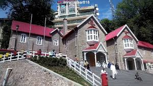
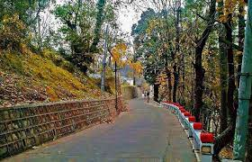
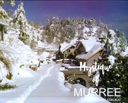
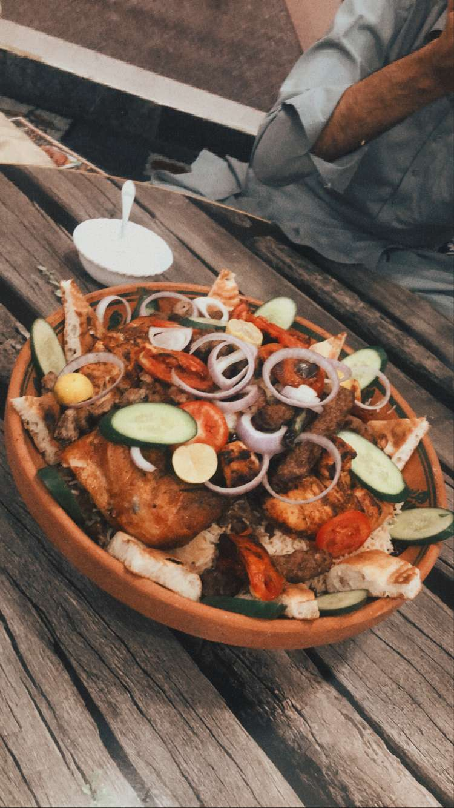
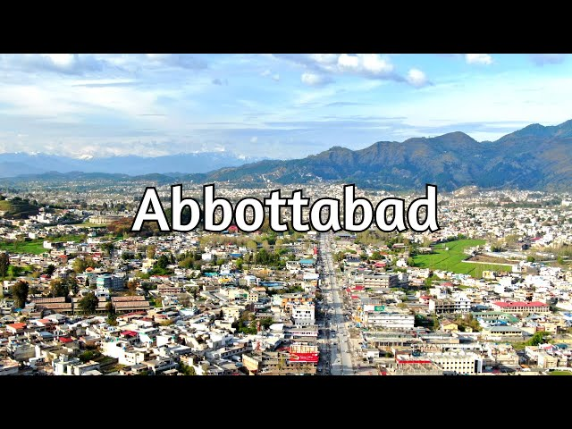
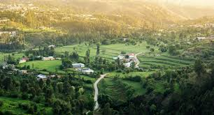
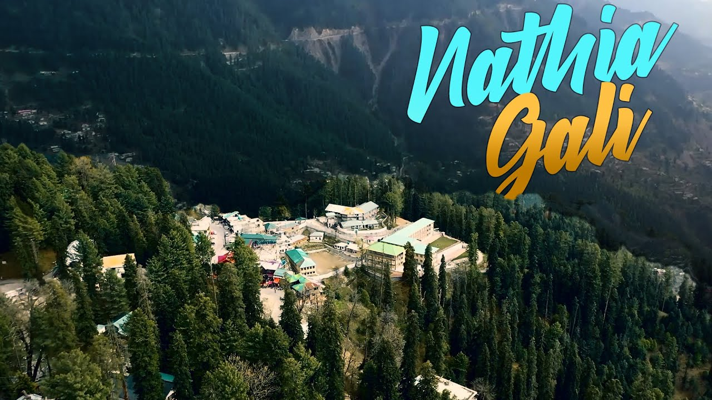
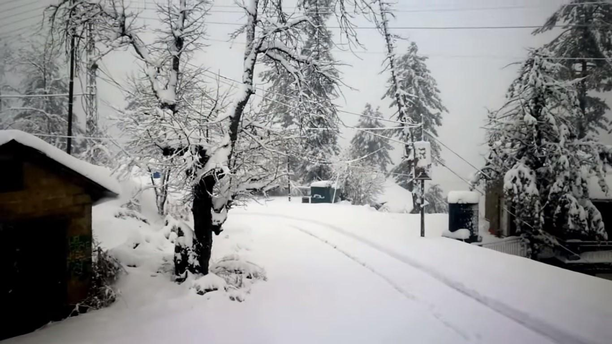
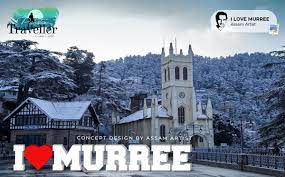
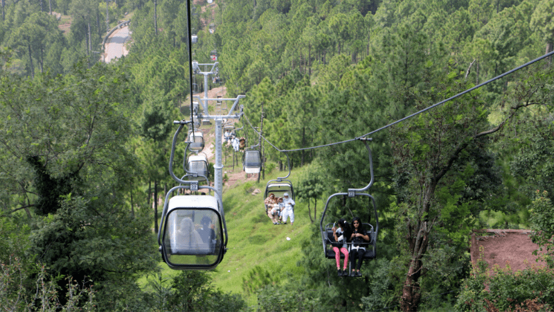

Trip Of Murree Aka Queen of Mountains🏔️
The journey begins with a drive through the charming streets of Peshawar, where you'll encounter bustling bazaars and vibrant street life. As we leave the city behind, the rugged terrain of the North-West Frontier Province unfolds before us, a precursor to the natural wonders we're about to witness.
In mean While we take a break at abbotabad to do dinner at some afgani restaurant.




Abbotabad
Our route takes us through the picturesque city of Abbottabad, famous for its lush green hills and crisp mountain air. The journey is punctuated by stops at local tea stalls, offering a taste of authentic chai and a chance to interact with friendly locals.At 9 pm we are at Abbotabad after crossing the tollplaza the restaurant was 10 min away we stop at there and orderd their special Platter.I highly recomend to try their special Platter
After eating alot of food then we continue our journey towards murree but their one more place to come before going to Murree is Nathia Gali.To feel the cold Breeze we stop at Nathia Gali.



Nathia Gali
Our ascent continues, and the landscape transforms as we make our way to Nathiagali. Dense forests, towering pines, and the sweet scent of conifers greet us. This charming hill station is the perfect place for a leisurely stroll and a break from the journey.


Murree
After a long Travel we reach at our destination we took our bags and put it into our flat and rest for a while then we go
to mallroad to get some snacks and enjoy the beauty and explore some local things and have some fun to make our minds fresh

